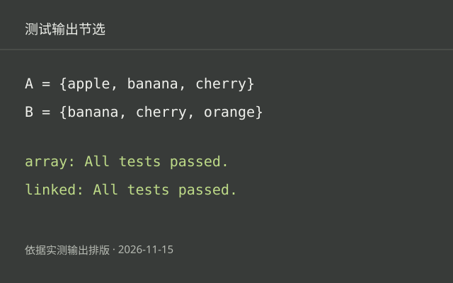

FPGA联调与显示同步
学到什么
负责电脑端串口界面，并参与软硬件联调，理解板端资源、视频输出和电脑显示之间的关系。
遇到问题现场显示器输出正常，但电脑端在接入分配器和采集卡前严重卡顿，长时间工作后会黑屏。原有板卡资源与硬件配置无法支撑预期的同步显示。
处理 / 下一步已购买并加入分配器和采集卡，补充硬件配置，解决电脑端卡顿、长时间工作后黑屏的同步显示问题。项目于2026年9—10月完成；后续继续记录设备型号、连接步骤与长时间运行情况。
相关项目：FPGA项目源码与说明
软件工程（AI大模型试验班）2501
在做 C 语言与数据结构练习，也参与 FPGA 项目的串口界面开发。
这里放一些项目、学习记录，以及还没解决的问题。
C / 数据结构 / 硬件交互

— · 已完成
负责电脑端串口界面与设备联调，补充硬件配置，解决同步显示问题。
查看项目 ↗
起 · 进行中
使用数组与链表实现字符串集合，负责集合功能与边界测试。
查看项目 ↗
· 已完成
参与团队桌面工具，支持图片与 PDF 识别、结果编辑及历史检索。
查看项目 ↗记录电脑端卡顿、黑屏现象与配置调整。
→区分显示器与电脑端表现，整理处理结果。
→检查重复添加、空集合与删除边界。
→这里记录个人信息、技能实践和 FPGA、数据结构、OCR 项目经历，按实际参与月份整理学习过程。
项目页提供现场照片、项目海报、OCR 界面、集合测试记录与仓库链接；学习记录支持搜索、本地新增与反馈草稿。
后续继续补充设备配置、长期运行观察和集合边界测试，也尝试大模型应用开发。
网站由 index.html、learning.html、projects.html 三个独立页面组成。解压源码后双击 index.html；也可运行 python -m http.server 8765。修改模板后运行 python tools/build.py。运行与更新说明 · 首页完整截图
以下按实际参与月份记录，更新截至2026年11月15日；2026年7—10月的项目实践均已发生。
共 3 条学习记录
负责电脑端串口界面，并参与软硬件联调，理解板端资源、视频输出和电脑显示之间的关系。
遇到问题现场显示器输出正常，但电脑端在接入分配器和采集卡前严重卡顿，长时间工作后会黑屏。原有板卡资源与硬件配置无法支撑预期的同步显示。
处理 / 下一步已购买并加入分配器和采集卡，补充硬件配置，解决电脑端卡顿、长时间工作后黑屏的同步显示问题。项目于2026年9—10月完成；后续继续记录设备型号、连接步骤与长时间运行情况。
从2026年9月开始，负责数据结构项目中的集合实现与测试，比较数组和链表的存储方式。
遇到问题例如，重复添加apple后集合大小应保持3；99字节字符串应允许添加，100字节字符串应被拒绝；满容量并集失败时，原结果应保留。链表还需要覆盖首尾节点删除、释放与复用。
处理 / 下一步集合源码与测试记录已整理到仓库；项目仍在进行，后续继续补充异常分配、内存检查和设计报告。
2026年7月参与团队OCR项目，围绕图片与文档识别，了解识别结果编辑、SQLite历史记录和桌面界面的组合。
遇到问题需要把文件导入、识别、结果编辑与历史检索组织成完整流程。这里记录项目实践目标，具体个人模块将继续补充。
处理 / 下一步团队项目已完成，仓库包含Python、PaddleOCR、Tkinter与SQLite相关源码和使用说明，可继续复盘代码结构与运行方式。
没有找到匹配的记录，试试其他关键词或分类。
启用脚本时，记录仅保存到当前浏览器并可导出；无脚本时，使用邮件客户端撰写记录，不会自动发送。
提交后先生成草稿，由你确认发送。启用脚本时可在本页复制；无脚本时使用已配置的邮件客户端。请勿填写敏感信息。
整理目前参与的项目、具体分工和遇到的问题。
共 3 个项目
面向摄像头图像处理和电脑端控制的系统。仓库包括 Sobel / Canny 边缘处理、几何识别、板端工程、电脑控制台与验证资料。

| 观察位置 | 补充硬件前 | 处理与结果 |
|---|---|---|
| 显示器 | 输出正常 | 保留正常显示作为对照 |
| 电脑端界面 | 严重卡顿，长时间工作后黑屏 | 加入分配器和采集卡，解决同步显示问题 |
FPGA_engin/ 板端工程入口与 RTL 开发源码/pc_v11/ 电脑控制台源码 开发源码/tb/ 测试台 说明文档/ 使用与交付说明 验证记录/ 已有仿真与报告
已补充分配器和采集卡。后续完善配置清单和连接步骤，方便再次搭建。
此页公开现场照片、项目海报、配置与处理记录；原始工程由私有仓库维护。
项目从2026年9月开始，仍在进行，包含集合、英文文本排版、外部排序等练习。我参与的部分是集合实现与测试，用两种结构理解相同操作的实现差异。

int set_contains(const LinkedSet *set, const char *text)
{
const Node *current = set->head;
while (current != NULL) {
if (strcmp(current->text, text) == 0) return 1;
current = current->next;
}
return 0;
}摘编自 task1_set/linked_set.c 的 set_contains，压缩了部分排版。逐个比较字符串，命中返回 1，遍历结束返回 0；若忽略字符串比较长度因素，时间复杂度为 O(n)。
2026年7月完成的团队桌面工具，支持图片与PDF导入、文字识别、结果编辑和历史检索。